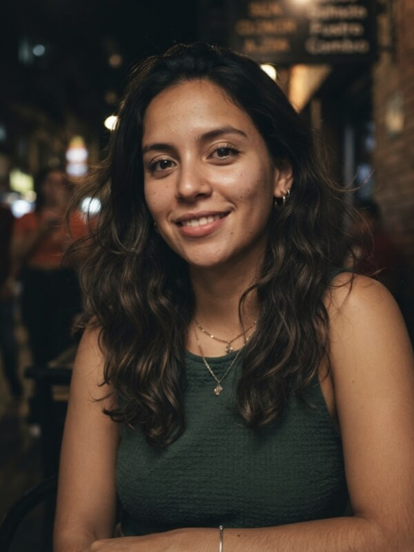
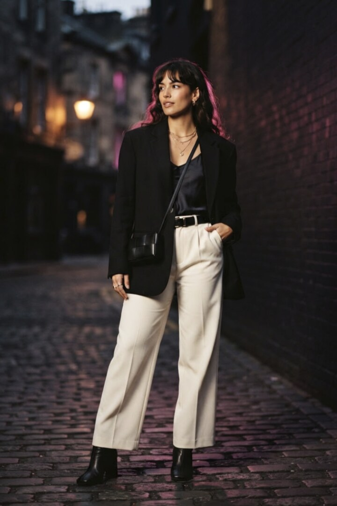

Match 3 · Round 7

Tap her photo to vote · no account needed
4,812 have voted
Round 7 · 8 matchups on the card
Browse all four categories, then predict
Prediction 1 of 5
Tap a name to continue · edit any step from the summary later
Prediction 2 of 5
One drag sets the number and the band · edit any step from the summary below
0% = all pick Sofía · 100% = all pick Valentina
Prediction 3 of 5

One drag sets the number and the band · edit any step from the summary below
0% = all pick Sofía · 100% = all pick Valentina
Prediction 4 of 5
“Tell us why someone should remember you after meeting you once.”
One drag sets the number and the band · edit any step from the summary below
0% = all pick Sofía · 100% = all pick Valentina
Prediction 5 of 5
“Tell us about the worst pickup line anyone has ever used on you — and how you reacted.”
One drag sets the number and the band · edit any step from the summary below
0% = all pick Sofía · 100% = all pick Valentina
Match 1 of 2 · nothing changes after this
Final as soon as you lock. Submit by 11:00; results at 13:00.
One-time · asked at your first lock
Your prediction becomes final when Lock & save succeeds. Submit by 11:00.
Your predictions vs the live crowd
How do you feel about how this matchup is going?
68% are happy with how the matchup is going.
Round 7 · all 8 matchups
The 6 you did not pick still move — you can watch and react, but they do not score.
Round 7 · Valentina vs Sofía
The crowd moved farther from your Style prediction. Your saved prediction is 64%. No live share or band membership is shown before 13:00.
Round 7 · Valentina vs Sofía
You predicted the share of the crowd picking Valentina. That share is hidden until 13:00.
Round 7 · Valentina vs Sofía
Green dot: landed in your band · Gold dot: outside it
Round 7 · all 10 predictions scored
Round 7
Contestant standings · after Round 7
… ranks 4–6 omitted in this preview …
TOP 8 QUALIFY · CUT BELOW RANK 8
Preview of 16 contestants · ranks 10–16 omitted
Valentina’s profile → Player leaderboardRank 3 of 16
Round 7 · settled at 13:00
All 16 refresh one photo and one video after Round 8.
Round 8 · missed
Missing a round does not remove you from the season. Round 9 opens as usual.